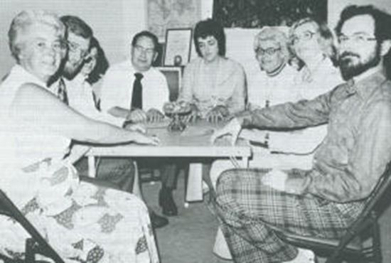

"The Philip Experiment" (experiment in which they summoned a fictional ghost of there own creation) mistery is solved.

Background knowledge
- "The Philip Experiment" was discussed in detail in the previous article below. 1972, "The Philip Experiment": an experiment in which a fictional ghost of his own creation was summoned. (2019-07-11)How it happened so far
- There are multiple third-party testimonies that "The Philip Experiment" is not a fabrication, but is factual (see previous article above). Writers Lyall Watson and Dan Greenburg were directly involved in this experiment and testified that it is true. - Now, assuming that this "The Philip Experiment" was true, does the following hypothesis hold?・Human consciousness materializes fictional beings, such as ghosts, demons, and spirits, "in the literal sense of the word.- In other words, is there an "externalization of the human subconscious" or Tulpa (materialization of thought) as in Theosophy? - In a previous post above I stated the following:Multiple personalities have long been recognized by experts, and it is not unreasonable to interpret Philip Aylesford's spirit-summoning experiments as a combination of multiple (or projected) virtual personalities and ESP phenomena, even without assuming something as puzzling as Tulpa's. ref: 1972, "The Philip Experiment": an experiment in which a fictional ghost of his own creation was summoned. (2019-07-11)- However, I happened to be reviewing the past articles above and noticed something that changed my opinion drastically as follows.A common sense interpretation, devoid of the occult, can solve this mystery.
- The following is not necessary to solve the mystery of "The Philip Experiment." - Tulpa - Externalization of the human subconscious - My conventional theory of "virtual personality + ESP phenomena" - Based on rational thought and common sense, I concluded that the SIH hypothesis (now named for convenience, haha) could solve the mystery. - Furthermore, the SIH Hypothesis offers the prospect (albeit dim) of an explanation for the mysterious memory lapse described by Dan Greenburg as follow:- Dan Greenburg attended this seance and Lyall Watson was there as well. Dan Greenburg witnessed a table floating at this seance. - Dan Greenburg later read Lyall Watson's book, which also described this incident. As he read on, he found that the floating table chased Dan Greenburg around. - It is true that the table floated, but it is not true that the table chased me (Dan Greenburg). Lyall Watson's malicious fabrication...so Dan Greenburg was outraged. - But just to be sure, He(Dan Greenburg) took out his book and checked the passages regarding this incident. He found that he had written that he had been chased around the table. Surprisingly, being chased around the table had completely dropped out of my memory.SIH Hypothesis
- Why is it dark at a seance, and why are the surroundings covered with a curtain or something? Is it because the ghosts to be summoned do not like the light? Is it to fabricate ghosts under the cover of darkness? - Perhaps the biggest reason is that the séance is an experience of hallucination, with the participants' subjectivity heightened to an extreme degree by the act of group hypnotic induction. In other words, this seance resembles a kind of LSD/DMT ingestion party. - The experiment is said to be a seance, in which participants spend an extended period of time co-creating an "imaginary ghost" and then summoning the ghost of their own creation. However, this seance is in effect an act of co-induction of hypnotic suggestion by the participants themselves. - The participants experienced the following hallucinations together through the hypnotic suggestion. - The appearance and response of a fictitious ghost created by the participants. - A table was floating and one of the participants was chased around by it. - Since the hallucinations were created by hypnotic suggestion performed in groups, they had to be repeated over and over again to penetrate everyone's unconscious, and "it took a considerable period of preparation before they were successful." - The participants in the room experience the hallucination of being chased by a table, and the hallucination is shared by other participants with heightened suggestibility who hear the report of the situation in real time. - Since the participants on the stage in full view of the public can believe that they have become chickens or pigs by hypnotic suggestion alone, something as trivial as being chased by a table should easily occur.Mechanisms by which memory lapses occurred
- If the SIH hypothesis is correct, the memory of "being chased around the table" is not a memory of an actual experience, but of a hallucinatory experience. - The hallucination itself can be expected (to some extent) to have characteristics similar to those of a "near-waking dream." - It is a fact that everyone has experienced that if you do not immediately write down the dream you had just before waking up, you will forget it immediately after waking up. - Therefore, it is possible that the memory of "being chased around the table" will be completely forgotten over time, even by the person himself.Postscripts
- To varying degrees, maybe the SIH hypothesis holds for all seances (including that Scole Experiments)? - I have read many articles in the past about strange cases of people who witnessed UFOs but forgot about the experience immediately afterward, and finally remembered it through notes they left behind after the sighting. - I have discussed many such strange cases in my past articles, where he/she witnessed a UFO but forgot the experience immediately afterwards, and finally remembered it by the notes he/she wrote down immediately after the sighting. For example: October 1994, Virginia: 300-meter-long, partially transparent, triangular UFO sighted at close range. (2014-05-21) Linda Zimmermann testifies about her UFO sighting and mysterious memory lapses (2020-06-28) Richard Dolan : UFO Unexplained oblivion immediately after sighting (2019-01-20) August 2, 1998: Immediately after videotaping the UFO, I was pulled inside the UFO from inside the house. (2015-06-26) - The memories of UFO/ET/abduction experiences recalled in regression hypnosis may also have an aspect of the co-creation of memories of hallucinatory experiences (by the hypnotherapist and the subject) and another aspect of the recall of forgotten memories of past hallucinatory experiences by the above-mentioned mechanism. - These series of mysterious cases of forgetting may be caused by the mechanism of the SIH hypothesis.My level of confidence regarding the SIH hypothesis
- Frankly, in the case of this article, I am not convinced strongly enough to say that it "solves the mystery"; I am not aware of the details of the Philip Experiment, so there may be data that would easily refute the SIH hypothesis. - In that sense, the title of "this article" is a bit of a bluff. I hope you will discount the bluff part and read the article. Still, it should be better than "Tulpa" or "materialization of thoughts".An addendum
- I think that the SIH hypothesis is a very ordinary and common-sense idea, so there must have already been an explanation similar to the SIH hypothesis, of which I am unaware. - I would like to think that there is some novelty in the explanation of the mechanism of memory loss associated with the SIH Hypothesis (but it is probably well known and studied by experts). (2020-11-13)
Postscript (2022-05-22)
I now believe that the phenomenon of "inexplicable forgetting immediately after the UFO sighting" described in this article is the result of temporary "disorientation + memory loss" caused by EMF abnormality.
Thanks
Translated with www.DeepL.com/Translator
(2022-08-20 translation)
First published article (Japanese)
"The Philip Experiment"（創作した架空の幽霊を召喚したという実験）の謎を解く。 (2020-11-13)